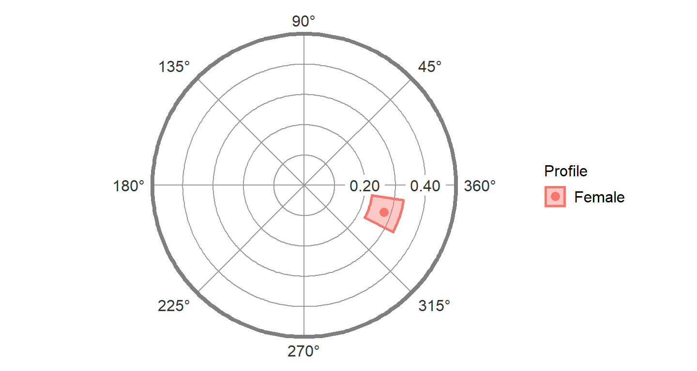

Intermediate SSM Analysis
Source:vignettes/intermediate-ssm-analysis.Rmd
intermediate-ssm-analysis.Rmd1. Generalizing the basic analyses
Generalizing to multiple means
We’ve already seen how adding the measures argument can change ssm_analyze() from analyzing means to analyzing correlations. Similarly, we can change it from analyzing all observations as a single group to analyzing subgroups separately. This is done using the grouping argument. This argument needs to contain a single variable (name or column number) that specifies each observation’s group. For instance, the Gender variable in the jz2017 dataset is a factor with two levels: Female and Male. To analyze each gender separately, we need to add the grouping = Gender argument to the function call.
data("jz2017")
data("iipsc")
jz2017s <- standardize(jz2017, PA:NO, octants(), instrument = iipsc, sample = 1)
results <- ssm_analyze(jz2017s, PA:NO, octants(), grouping = Gender)
summary(results)
#> Call:
#> ssm_analyze(.data = jz2017s, scales = PA:NO, angles = octants(),
#> grouping = Gender)
#>
#> Statistical Basis: Mean Scores
#> Bootstrap Resamples: 2000
#> Confidence Level: 0.95
#> Listwise Deletion: TRUE
#> Scale Displacements: 90 135 180 225 270 315 360 45
#>
#> Profile [Female]:
#> Estimate Lower CI Upper CI
#> Elevation 0.946 0.907 0.984
#> X-Value 0.459 0.422 0.498
#> Y-Value -0.310 -0.357 -0.266
#> Amplitude 0.554 0.511 0.600
#> Displacement 325.963 321.834 329.805
#> Model Fit 0.889
#>
#> Profile [Male]:
#> Estimate Lower CI Upper CI
#> Elevation 0.884 0.839 0.928
#> X-Value 0.227 0.191 0.262
#> Y-Value -0.186 -0.225 -0.147
#> Amplitude 0.294 0.256 0.330
#> Displacement 320.685 313.386 327.985
#> Model Fit 0.824Note that the output of summary() looks the same as previous mean-based analyses except that there are now two Profile blocks: one for Female and one for Male. A similar modification will occur if we generate a table and figure.
| Profile | Elevation | X-Value | Y-Value | Amplitude | Displacement | Fit |
|---|---|---|---|---|---|---|
| Female | 0.95 [0.91, 0.98] | 0.46 [0.42, 0.50] | -0.31 [-0.36, -0.27] | 0.55 [0.51, 0.60] | 326.0 [321.8, 329.8] | 0.889 |
| Male | 0.88 [0.84, 0.93] | 0.23 [0.19, 0.26] | -0.19 [-0.23, -0.15] | 0.29 [0.26, 0.33] | 320.7 [313.4, 328.0] | 0.824 |

Any number of groups can be analyzed in this way, and the output will contain additional profile blocks, the table will contain additional rows, and the figure will contain additional points. The grouping variable just needs to contain more than one level (i.e., unique value). Also notice how, in the plot above, the Male profile has a dashed border instead of the typical solid border. This is because the Male profile has low prototypicality (i.e., \(R^2<.70\)) and therefore its plot is untrustworthy. It is also possible to prevent profiles from low prototypicality from plotting using the lowfit argument.

Generalizing to multiple measures
Similarly, we can analyze multiple external measures in a single function call by providing a vector of variables to the measures argument instead of a single variable. This can be done by wrapping the variable names or column numbers with the c() or, if they are adjacent columns, with the : shortcut. The package functions were written to analyze all measures and groups within a single bootstrap, so adding additional measures and groups should still be fast.
results2 <- ssm_analyze(jz2017, PA:NO, octants(), measures = c(NARPD, ASPD))
summary(results2)
#> Call:
#> ssm_analyze(.data = jz2017, scales = PA:NO, angles = octants(),
#> measures = c(NARPD, ASPD))
#>
#> Statistical Basis: Correlation Scores
#> Bootstrap Resamples: 2000
#> Confidence Level: 0.95
#> Listwise Deletion: TRUE
#> Scale Displacements: 90 135 180 225 270 315 360 45
#>
#> Profile [NARPD]:
#> Estimate Lower CI Upper CI
#> Elevation 0.202 0.168 0.236
#> X-Value -0.062 -0.095 -0.026
#> Y-Value 0.179 0.145 0.214
#> Amplitude 0.189 0.155 0.225
#> Displacement 108.967 98.853 118.517
#> Model Fit 0.957
#>
#> Profile [ASPD]:
#> Estimate Lower CI Upper CI
#> Elevation 0.124 0.090 0.157
#> X-Value -0.099 -0.134 -0.063
#> Y-Value 0.203 0.168 0.240
#> Amplitude 0.226 0.188 0.265
#> Displacement 115.927 107.250 124.516
#> Model Fit 0.964| Profile | Elevation | X-Value | Y-Value | Amplitude | Displacement | Fit |
|---|---|---|---|---|---|---|
| NARPD | 0.20 [0.17, 0.24] | -0.06 [-0.09, -0.03] | 0.18 [0.14, 0.21] | 0.19 [0.15, 0.22] | 109.0 [98.9, 118.5] | 0.957 |
| ASPD | 0.12 [0.09, 0.16] | -0.10 [-0.13, -0.06] | 0.20 [0.17, 0.24] | 0.23 [0.19, 0.27] | 115.9 [107.2, 124.5] | 0.964 |

Generalizing to multiple groups and multiple measures
Finally, it is possible to analyze multiple measures within multiple groups. As you might expect, this requires providing both the measures and grouping arguments to the same function call. Again, any number of measures and groups is possible. The profiles in such an analysis will be named GROUP_MEASURE as below.
results3 <- ssm_analyze(jz2017, PA:NO, octants(), grouping = Gender, measures = PARPD:SZTPD)
summary(results3)
#> Call:
#> ssm_analyze(.data = jz2017, scales = PA:NO, angles = octants(),
#> measures = PARPD:SZTPD, grouping = Gender)
#>
#> Statistical Basis: Correlation Scores
#> Bootstrap Resamples: 2000
#> Confidence Level: 0.95
#> Listwise Deletion: TRUE
#> Scale Displacements: 90 135 180 225 270 315 360 45
#>
#> Profile [Female_PARPD]:
#> Estimate Lower CI Upper CI
#> Elevation 0.262 0.220 0.305
#> X-Value -0.146 -0.192 -0.100
#> Y-Value 0.120 0.070 0.171
#> Amplitude 0.189 0.137 0.243
#> Displacement 140.524 126.580 155.129
#> Model Fit 0.870
#>
#> Profile [Female_SCZPD]:
#> Estimate Lower CI Upper CI
#> Elevation 0.177 0.130 0.218
#> X-Value -0.230 -0.285 -0.173
#> Y-Value -0.047 -0.103 0.006
#> Amplitude 0.235 0.185 0.288
#> Displacement 191.613 178.684 208.113
#> Model Fit 0.845
#>
#> Profile [Female_SZTPD]:
#> Estimate Lower CI Upper CI
#> Elevation 0.237 0.194 0.280
#> X-Value -0.130 -0.175 -0.087
#> Y-Value 0.016 -0.037 0.069
#> Amplitude 0.131 0.090 0.180
#> Displacement 172.870 151.247 198.040
#> Model Fit 0.812
#>
#> Profile [Male_PARPD]:
#> Estimate Lower CI Upper CI
#> Elevation 0.243 0.193 0.288
#> X-Value -0.035 -0.080 0.015
#> Y-Value 0.114 0.066 0.165
#> Amplitude 0.120 0.075 0.171
#> Displacement 106.881 82.677 129.996
#> Model Fit 0.648
#>
#> Profile [Male_SCZPD]:
#> Estimate Lower CI Upper CI
#> Elevation 0.204 0.145 0.260
#> X-Value -0.178 -0.220 -0.136
#> Y-Value -0.017 -0.071 0.039
#> Amplitude 0.179 0.139 0.222
#> Displacement 185.351 167.551 203.091
#> Model Fit 0.917
#>
#> Profile [Male_SZTPD]:
#> Estimate Lower CI Upper CI
#> Elevation 0.240 0.186 0.293
#> X-Value -0.037 -0.084 0.011
#> Y-Value 0.029 -0.018 0.079
#> Amplitude 0.047 0.013 0.101
#> Displacement 142.345 68.178 218.702
#> Model Fit 0.424| Profile | Elevation | X-Value | Y-Value | Amplitude | Displacement | Fit |
|---|---|---|---|---|---|---|
| Female_PARPD | 0.26 [0.22, 0.30] | -0.15 [-0.19, -0.10] | 0.12 [0.07, 0.17] | 0.19 [0.14, 0.24] | 140.5 [126.6, 155.1] | 0.870 |
| Female_SCZPD | 0.18 [0.13, 0.22] | -0.23 [-0.29, -0.17] | -0.05 [-0.10, 0.01] | 0.23 [0.19, 0.29] | 191.6 [178.7, 208.1] | 0.845 |
| Female_SZTPD | 0.24 [0.19, 0.28] | -0.13 [-0.18, -0.09] | 0.02 [-0.04, 0.07] | 0.13 [0.09, 0.18] | 172.9 [151.2, 198.0] | 0.812 |
| Male_PARPD | 0.24 [0.19, 0.29] | -0.03 [-0.08, 0.01] | 0.11 [0.07, 0.17] | 0.12 [0.07, 0.17] | 106.9 [82.7, 130.0] | 0.648 |
| Male_SCZPD | 0.20 [0.15, 0.26] | -0.18 [-0.22, -0.14] | -0.02 [-0.07, 0.04] | 0.18 [0.14, 0.22] | 185.4 [167.6, 203.1] | 0.917 |
| Male_SZTPD | 0.24 [0.19, 0.29] | -0.04 [-0.08, 0.01] | 0.03 [-0.02, 0.08] | 0.05 [0.01, 0.10] | 142.3 [68.2, 218.7] | 0.424 |

2. Contrast analyses
The final argument to master is contrast, which allows us to compare two groups or measures. The value of this argument must be one of the following strings: “none” for no contrast (default), “model” for a model contrast, or “test” for a parameter contrast. A model contrast can be useful for mean-based analyses and first generates scores for each group (or measure), then calculates the difference between these scores, and finally estimates SSM parameters for these difference scores. A parameter contrast is typically what is desired for inferential comparison and first generates scores for each group (or measure), then estimates SSM parameters for these scores, and finally calculates the difference between the parameters. To keep the code simpler and to discourage “fishing expeditions,” only two groups or measures can be compared at a time.
Contrasts between groups’ means
To compare the mean profiles for females and males, we can start with the same syntax we had before and then add a contrast argument. For the sake of illustration, we will use a model contrast here, but for some purposes, a parameter contrast might be more appropriate.
results4 <- ssm_analyze(jz2017s, PA:NO, octants(), grouping = Gender, contrast = "model")
summary(results4)
#> Call:
#> ssm_analyze(.data = jz2017s, scales = PA:NO, angles = octants(),
#> grouping = Gender, contrast = "model")
#>
#> Statistical Basis: Mean Scores
#> Bootstrap Resamples: 2000
#> Confidence Level: 0.95
#> Listwise Deletion: TRUE
#> Scale Displacements: 90 135 180 225 270 315 360 45
#>
#> Contrast [Male - Female]:
#> Estimate Lower CI Upper CI
#> Elevation -0.062 -0.119 -0.004
#> X-Value -0.232 -0.285 -0.181
#> Y-Value 0.124 0.066 0.183
#> Amplitude 0.263 0.209 0.321
#> Displacement 151.858 141.234 164.387
#> Model Fit 0.855Note that the profile blocks we are used to have been replaced by a contrast block. By default, the contrast is made by subtracting the first level of the grouping variable from the second level (e.g., Male - Female). This provides an indication of the direction of the contrast. We can again generate a table and figure to display the results. Note that, because we used a model contrast, the figure will be a circular figure and not a contrast figure which we will see below. However, we would get a contrast figure if we used a parameter contrast.
| Contrast | Elevation | X-Value | Y-Value | Amplitude | Displacement | Fit |
|---|---|---|---|---|---|---|
| Male - Female | -0.06 [-0.12, -0.00] | -0.23 [-0.29, -0.18] | 0.12 [0.07, 0.18] | 0.26 [0.21, 0.32] | 151.9 [141.2, 164.4] | 0.855 |

Contrasts between measures in a group
Comparing measures in a group is very similar. Again, all we need to do is add the contrast argument to the function call containing measures. Here we will use a parameter contrast to see what they look like.
results5 <- ssm_analyze(jz2017, PA:NO, octants(), measures = c(NARPD, ASPD),
contrast = "test")
summary(results5)
#> Call:
#> ssm_analyze(.data = jz2017, scales = PA:NO, angles = octants(),
#> measures = c(NARPD, ASPD), contrast = "test")
#>
#> Statistical Basis: Correlation Scores
#> Bootstrap Resamples: 2000
#> Confidence Level: 0.95
#> Listwise Deletion: TRUE
#> Scale Displacements: 90 135 180 225 270 315 360 45
#>
#> Contrast [ASPD - NARPD]:
#> Estimate Lower CI Upper CI
#> Elevation -0.079 -0.114 -0.043
#> X-Value -0.037 -0.074 0.002
#> Y-Value 0.024 -0.014 0.061
#> Amplitude 0.037 -0.002 0.075
#> Displacement 6.960 -3.391 17.383
#> Model Fit 0.007| Contrast | Δ Elevation | Δ X-Value | Δ Y-Value | Δ Amplitude | Δ Displacement | Δ Fit |
|---|---|---|---|---|---|---|
| ASPD - NARPD | -0.08 [-0.11, -0.04] | -0.04 [-0.07, 0.00] | 0.02 [-0.01, 0.06] | 0.04 [-0.00, 0.08] | 7.0 [-3.4, 17.4] | 0.007 |

Here, instead of a circle plot, we see a contrast plot showing the difference between the two measures’ SSM parameters and their 95% confidence intervals. Because the confidence interval for the elevation parameter does not include zero, this parameter is significantly different between the measures.
Contrasts between groups’ correlations
Finally, we might want to compare a single measure’s profiles in two different groups. To do so, we need to specify the measures, the grouping variable, and the type of contrast. In this case, we need to ensure that we are providing only a single measure and a grouping variable with just two levels (as again only two things can be contrasted at a time). Note that the contrast name in this case will take the form of MEASURE: GROUP2 - GROUP1.
results6 <- ssm_analyze(jz2017, PA:NO, octants(), measures = BORPD,
grouping = Gender, contrast = "test")
summary(results6)
#> Call:
#> ssm_analyze(.data = jz2017, scales = PA:NO, angles = octants(),
#> measures = BORPD, grouping = Gender, contrast = "test")
#>
#> Statistical Basis: Correlation Scores
#> Bootstrap Resamples: 2000
#> Confidence Level: 0.95
#> Listwise Deletion: TRUE
#> Scale Displacements: 90 135 180 225 270 315 360 45
#>
#> Contrast [BORPD: Male - Female]:
#> Estimate Lower CI Upper CI
#> Elevation 0.069 0.000 0.136
#> X-Value 0.080 0.017 0.146
#> Y-Value -0.072 -0.152 0.010
#> Amplitude -0.088 -0.160 -0.003
#> Displacement -40.880 -105.533 19.259
#> Model Fit -0.447| Contrast | Δ Elevation | Δ X-Value | Δ Y-Value | Δ Amplitude | Δ Displacement | Δ Fit |
|---|---|---|---|---|---|---|
| BORPD: Male - Female | 0.07 [0.00, 0.14] | 0.08 [0.02, 0.15] | -0.07 [-0.15, 0.01] | -0.09 [-0.16, -0.00] | -40.9 [-105.5, 19.3] | -0.447 |

3. Taxonomy of analysis types
Although all SSM analyses are based on the idea of decomposing circumplex scores into the parameters of a cosine curve, there are actually many different ways to implement it. Each of these implementations allows different questions to be explored. In the table below, a list of the SSM analysis types that are currently implemented in the circumplex package is provided. This table also provides the specific combination of arguments needed to implement each analysis using the ssm_analyze() function. Specifying which analysis to run is simply a matter of providing the correct arguments to the function; this allows a single function to essentially do the work of seven and makes for a more intuitive user experience.
| # | Usage | measures | grouping | contrast |
|---|---|---|---|---|
| 1 | Examine overall mean profile | FALSE | FALSE | FALSE |
| 2 | Examine groups’ mean profiles | FALSE | TRUE | FALSE |
| 3 | Compare groups’ mean profiles | FALSE | TRUE | TRUE |
| 4 | Examine variables’ correlation profiles | TRUE | FALSE | FALSE |
| 5 | Compare variables’ correlation profiles | TRUE | FALSE | TRUE |
| 6 | Examine groups’ correlation profiles | TRUE | TRUE | FALSE |
| 7 | Compare groups’ correlation profiles | TRUE | TRUE | TRUE |
The three main questions to ask when conducting a new SSM analysis are:
Do we want to project non-circumplex measures into the circumplex space? If yes, we must specify one or more
measures, and the scores that get modeled using SSM will be the correlations between the circumplex scales and these measures. If no, we must omit themeasuresargument, and the scores that get modeled using SSM will be the mean scores on the circumplex scales.Do we want to perform analyses separately for groups within the dataset? If yes, we must specify a
groupingvariable, and the output will contain results for each group (i.e., unique value of this variable). If no, we must omit thegroupingargument, and a single set of results for all data will be output.Do we want to contrast/compare two sets of results? If yes, we must specify a
contrasttype (i.e., “model” or “test”) and ensure that we are only requesting two sets of results (i.e., two groups or two measures). If no, we must omit thecontrastargument, and the results themselves will be output, rather than their contrast.
4. Working with SSM tables
Basic customizations of tables
Additional arguments to the ssm_table() function can be explored using the ?ssm_table command. Two useful options are the xy argument, which shows or hides the x-value and y-value columns, and the caption argument which allows a custom string to be printed above the table. Note as well that the return object of this function is just a tibble or data frame, which can be easily edited to add, change, or remove text. To change the formatting of the table, see the htmlTable or kableExtra packages.
Combining and exporting tables
In some cases, such as multiple contrasts or groupings, we may want to combine several tables into one by joining them together as rows. This can be done using the ssm_append() function.
res1 <- ssm_analyze(jz2017s, PA:NO, octants())
res2 <- ssm_analyze(jz2017s, PA:NO, octants(), grouping = Gender)
tab1 <- ssm_table(res1, xy = FALSE, render = FALSE)
tab2 <- ssm_table(res2, xy = FALSE, render = FALSE)
ssm_append(tab1, tab2)| Profile | Elevation | Amplitude | Displacement | Fit |
|---|---|---|---|---|
| All | 0.92 [0.89, 0.94] | 0.43 [0.40, 0.46] | 324.3 [320.7, 327.8] | 0.878 |
| Female | 0.95 [0.91, 0.98] | 0.55 [0.51, 0.60] | 326.0 [322.0, 330.0] | 0.889 |
| Male | 0.88 [0.84, 0.93] | 0.29 [0.26, 0.33] | 320.7 [313.5, 328.2] | 0.824 |
5. Working with SSM figures
Basic customizations of figures
Additional arguments to the ssm_plot() function can be explored using the ?ssm_plot, ?ssm_plot_circle, and ?ssm_plot_contrast commands. For both types of figures, the fontsize argument will control the baseline text size in pts (default = 12). Some text elements will be rescaled from the specified fontsize (e.g., multiplying it by 150%). For circle plots, we have already seen the lowfit argument for including points with low model fit. Another useful option is the amax argument for the maximum value of the amplitude scale. By default, the package picks a number that will fit all the points and generate “round” numbers at each 1/5 tick; however, this default can be overwritten using the amax argument.

For contrast plots, several arguments exist for customizing the output. We have already seen the xy argument for including or excluding the x-value and y-value contrasts. We can also change the color and linesize of the point range (linesize in mm). Finally, we can change the axislabel displayed to the left of the plots. More complex customizations will be the subject of an advanced vignette.

Exporting figures as files
All SSM plots are created using the ggplot2 package, which is incredibly flexible and powerful. It also offers the ggsave() function to export figures to external files of various types. See the documentation for this function (?ggsave) to learn more, but some useful arguments are filename, plot, width, height, and units. We can save the figure as a raster image file (e.g., “png”, “jpeg”, “tiff”), a vector image file (e.g., “svg”), or a portable document (e.g., “pdf” or “tex”). We can also control the exact width and height of the image in different units (i.e., “in”, “cm”, or “mm”). Because the underlying graphics are vectorized in R, they can be easily scaled to any size without loss of quality and used in manuscripts, presentations, or posters.
Wrap-up
In this vignette, we learned how to generalize the SSM analyses to multiple groups and measures, how to conduct contrast analyses, how to make basic customizations to tables and figures, and how to export tables and figures to external files. In the next vignette, “Advanced Circumplex Visualization,” we will learn more advanced customization options for the SSM figures and other circumplex visualizations. (Note that the next vignette is still in progress.)
References
Gurtman, M. B. (1992). Construct validity of interpersonal personality measures: The interpersonal circumplex as a nomological net. Journal of Personality and Social Psychology, 63(1), 105–118.
Gurtman, M. B., & Pincus, A. L. (2003). The circumplex model: Methods and research applications. In J. A. Schinka & W. F. Velicer (Eds.), Handbook of psychology. Volume 2: Research methods in psychology (pp. 407–428). Hoboken, NJ: John Wiley & Sons, Inc.
Wright, A. G. C., Pincus, A. L., Conroy, D. E., & Hilsenroth, M. J. (2009). Integrating methods to optimize circumplex description and comparison of groups. Journal of Personality Assessment, 91(4), 311–322.
Zimmermann, J., & Wright, A. G. C. (2017). Beyond description in interpersonal construct validation: Methodological advances in the circumplex Structural Summary Approach. Assessment, 24(1), 3–23.